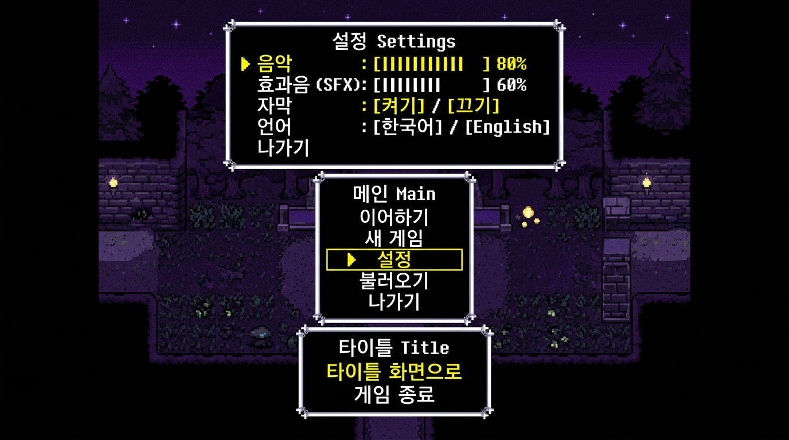

🎮 이 단원이 게임에서 쓰이는 곳 (언더테일·RPG)
스택 = 메뉴 뒤로가기. 큐 = 대사·이벤트 순서. 덱 = 앞뒤로 넣었다 뺐다 (예: 최근 아이템 목록). 다음 강의에서 하나씩 자세히 봐요.

선형 구조란?
자료를 한 줄로 나열한 구조를 선형 구조라고 해요. 리스트, 스택, 큐, 덱이 모두 여기 속합니다.
차이는 "어디에 넣고, 어디서 뺄 수 있는지"예요.
- 리스트: 앞·뒤·중간 어디든 넣고 뺄 수 있음 (배열, 연결 리스트)
- 스택: 맨 위에서만 넣고 뺌 (LIFO, 라이포)
- 큐: 뒤에서 넣고, 앞에서만 뺌 (FIFO, 파이포)
- 덱: 앞·뒤 둘 다 넣고 뺄 수 있음
프로그래밍기능사에서는 스택·큐의 연산 순서와 결과가 자주 나와요.
📌 실습 전: 스택 실습에서 쓰는 파이썬 API·함수
대응 스택은 "맨 위에만 넣고, 맨 위에서만 뺀다"가 핵심이에요. 파이썬 list에서 맨 뒤를 "맨 위(top)"로 봅니다.
리스트.append(값)- 맨 뒤에 넣기 → 스택의 push(푸시)에 대응해요.
리스트.pop()- 괄호를 비우면 맨 뒤에서 하나 꺼내서 반환 → 스택의 pop(팝)에 대응해요.
왜 list만으로 되나요? 스택은 "맨 끝"에만 넣고 빼면 되므로, list의 append와 pop()이 모두 O(1)로 동작해요.
👇 아래 코드가 실습창과 동일한 예제예요. 빈칸(_____)을 채운 뒤 실습창에서 그대로 실행해 보세요.
# 스택: 맨 위에만 넣기(push=append), 맨 위에서만 꺼내기(pop)
stack = []
stack.append("A")
# ① 빈칸: 스택에 "B"를 넣으세요 (append 사용)
stack._____("B")
stack.append("C")
print("push A,B,C 후:", stack)
# ② 빈칸: 맨 위에서 하나 꺼내서 변수 x에 넣기 (pop은 인자 없음)
x = stack._____()
print("pop() →", x, ", 남은 스택:", stack)
🐍 파이썬으로 실습 (이 페이지 안에서)
위 코드와 동일한 예제가 실습창에 불러와져 있어요. 빈칸을 채운 뒤 실행해 보세요. (다음 강의에서 큐·스택을 자세히 배워요)